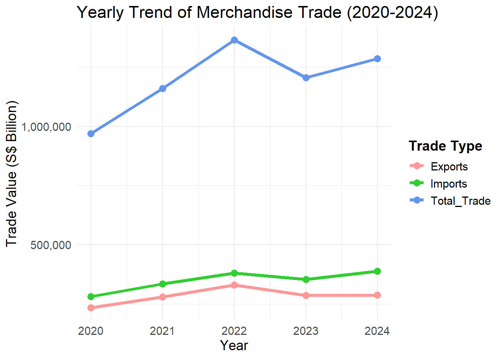
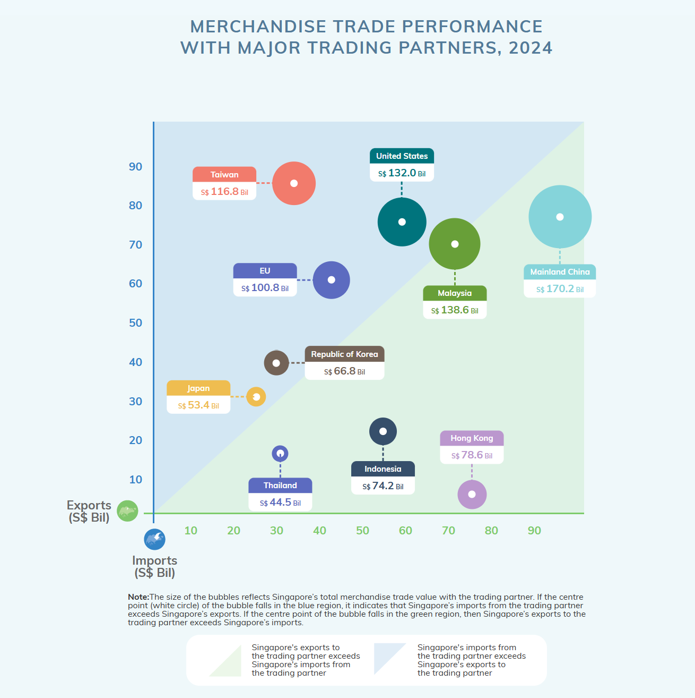
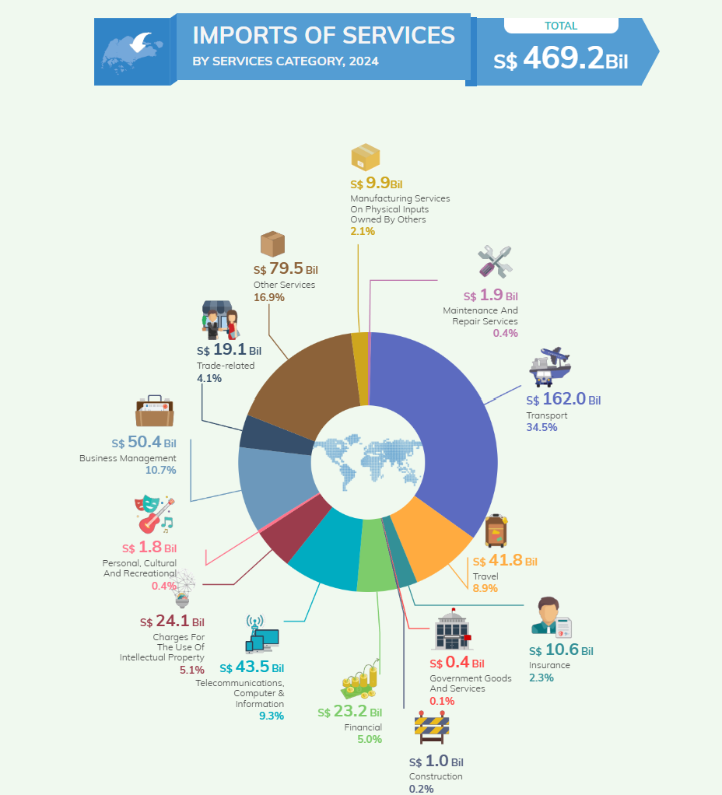
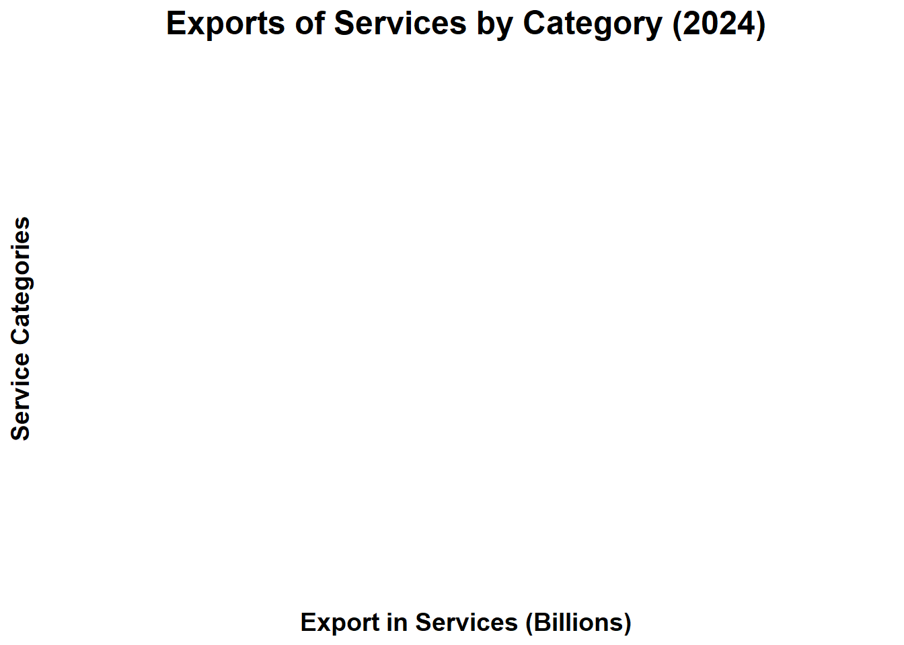
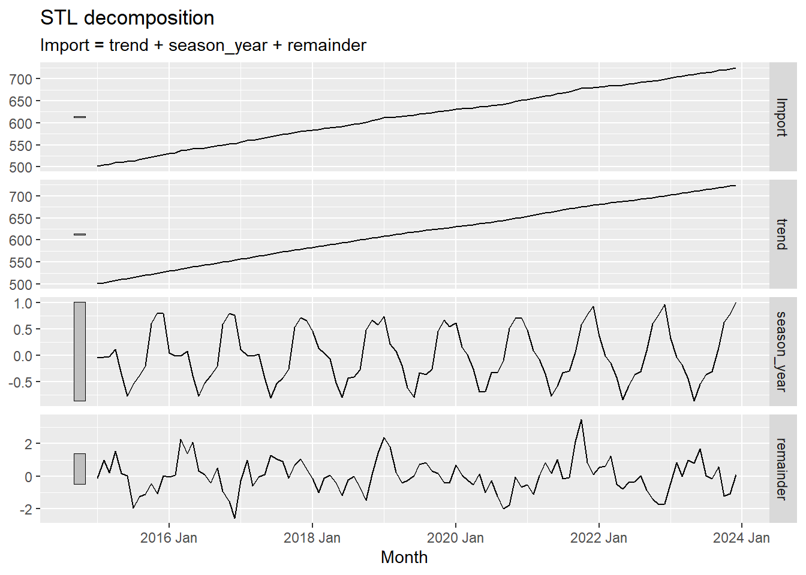
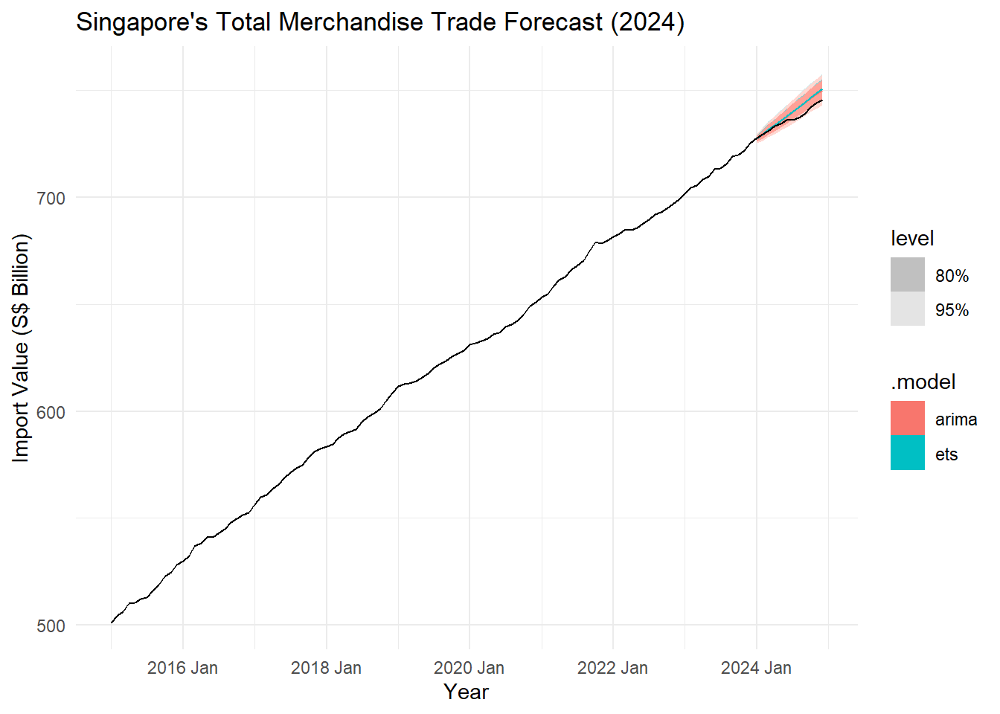

# Load libraries
library(tidyverse) # Data wrangling and visualization
library(readxl) # Read Excel files
library(lubridate) # Work with date formats
library(janitor) # Clean column names
library(ggplot2) # Visualization
library(tsibble) # Time-series data wrangling
library(forecast) # Time-series forecasting
library(feasts) # Time-series decomposition
library(readxl)Take home Exercise2
1.Overview
The Singapore Department of Statistics (SingStat) website provides official data on Singapore’s economy, society, and trade through interactive dashboards, infographics, and datasets. Its International Trade section presents key trade figures, including exports, imports, and major trading partners, using structured visualizations. For this take-home exercise, I am evaluating three of these visualizations to assess their clarity, design, and effectiveness. By identifying strengths and suggesting improvements, this analysis aims to enhance the presentation of trade data, making it more accessible and engaging for a wider audience.
2.Getting Started
2.1 Load Required Libraries
Before starting, install and load the necessary R packages:
| Description | Library |
|---|---|
| Core (Data & Visualization) | tidyverse , ggplot2 , ggrepel , patchwork |
| Styling & Themes | ggthemes , hrbrthemes |
| Interactivity | ggiraph , plotly , DT |
| Statistical & Model Insights | ggdist , ggridges , ggstatsplot , performance , see |
| Exploratory & Clustering | corrplot , heatmaply , GGally |
| Hierarchical Analysis | treemap , treemapify |
Let us install the above packages using Pacman.The pacman package is used to load required libraries without the need of being sure of having that particular package installed. The functions in this package are easier to use than their equivalent base functions. Coding time required is significantly reduced because of this package.
pacman::p_load(tidyverse, ggplot2, ggrepel, patchwork,ggthemes, hrbrthemes,
ggiraph, plotly, DT,ggdist, ggridges, ggstatsplot,
performance,readxl, tsibble, feasts, fable, scales)2.2 Importing Data
The dataset contains Singapore’s international trade data, including Imports, Domestic Exports, and Re-Exports from various trading partners over multiple years. It provides trade values across different commodities and markets, enabling analysis of trade trends, partner dependencies, and overall merchandise trade performance.
# Read each file into a dataframe
commodity_prices <- read_excel("data/Commodity_currentprices.xlsx")
domestic_exports <- read_excel("data/Domestic_exports.xlsx")
imports <- read_excel("data/Import.xlsx")
re_exports <- read_excel("data/Re-exports.xlsx")# View the first few rows of each dataset
head(commodity_prices)# A tibble: 6 × 734
`Data Series` `2025 Jan` `2024 Dec` `2024 Nov` `2024 Oct` `2024 Sep`
<chr> <dbl> <dbl> <dbl> <dbl> <dbl>
1 Total Merchandise Trad… 114153980. 116278793. 110132324. 107525960. 103512460.
2 Oil 19490290. 18488974. 18061885. 17510050. 15686654.
3 Petroleum 16418934. 15564654. 14910686. 14804334. 12611958.
4 Oil Bunkers 3071356. 2924319. 3151200. 2705716. 3074695.
5 Non-Oil 94663690. 97789819. 92070439. 90015910. 87825806.
6 Food & Live Animals 2460911. 2704579. 2237326. 2344745. 2235005.
# ℹ 728 more variables: `2024 Aug` <dbl>, `2024 Jul` <dbl>, `2024 Jun` <dbl>,
# `2024 May` <dbl>, `2024 Apr` <dbl>, `2024 Mar` <dbl>, `2024 Feb` <dbl>,
# `2024 Jan` <dbl>, `2023 Dec` <dbl>, `2023 Nov` <dbl>, `2023 Oct` <dbl>,
# `2023 Sep` <dbl>, `2023 Aug` <dbl>, `2023 Jul` <dbl>, `2023 Jun` <dbl>,
# `2023 May` <dbl>, `2023 Apr` <dbl>, `2023 Mar` <dbl>, `2023 Feb` <dbl>,
# `2023 Jan` <dbl>, `2022 Dec` <dbl>, `2022 Nov` <dbl>, `2022 Oct` <dbl>,
# `2022 Sep` <dbl>, `2022 Aug` <dbl>, `2022 Jul` <dbl>, `2022 Jun` <dbl>, …head(domestic_exports)# A tibble: 6 × 266
...1 ...2 ...3 ...4 ...5 ...6 ...7 ...8 ...9 ...10 ...11 ...12 ...13
<chr> <chr> <chr> <chr> <chr> <chr> <chr> <chr> <chr> <chr> <chr> <chr> <chr>
1 Theme… <NA> <NA> <NA> <NA> <NA> <NA> <NA> <NA> <NA> <NA> <NA> <NA>
2 Subje… <NA> <NA> <NA> <NA> <NA> <NA> <NA> <NA> <NA> <NA> <NA> <NA>
3 Topic… <NA> <NA> <NA> <NA> <NA> <NA> <NA> <NA> <NA> <NA> <NA> <NA>
4 Table… <NA> <NA> <NA> <NA> <NA> <NA> <NA> <NA> <NA> <NA> <NA> <NA>
5 <NA> <NA> <NA> <NA> <NA> <NA> <NA> <NA> <NA> <NA> <NA> <NA> <NA>
6 Data … Chec… <NA> <NA> <NA> <NA> <NA> <NA> <NA> <NA> <NA> <NA> <NA>
# ℹ 253 more variables: ...14 <chr>, ...15 <chr>, ...16 <chr>, ...17 <chr>,
# ...18 <chr>, ...19 <chr>, ...20 <chr>, ...21 <chr>, ...22 <chr>,
# ...23 <chr>, ...24 <chr>, ...25 <chr>, ...26 <chr>, ...27 <chr>,
# ...28 <chr>, ...29 <chr>, ...30 <chr>, ...31 <chr>, ...32 <chr>,
# ...33 <chr>, ...34 <chr>, ...35 <chr>, ...36 <chr>, ...37 <chr>,
# ...38 <chr>, ...39 <chr>, ...40 <chr>, ...41 <chr>, ...42 <chr>,
# ...43 <chr>, ...44 <chr>, ...45 <chr>, ...46 <chr>, ...47 <chr>, …head(imports)# A tibble: 6 × 266
...1 ...2 ...3 ...4 ...5 ...6 ...7 ...8 ...9 ...10 ...11 ...12 ...13
<chr> <chr> <chr> <chr> <chr> <chr> <chr> <chr> <chr> <chr> <chr> <chr> <chr>
1 Theme… <NA> <NA> <NA> <NA> <NA> <NA> <NA> <NA> <NA> <NA> <NA> <NA>
2 Subje… <NA> <NA> <NA> <NA> <NA> <NA> <NA> <NA> <NA> <NA> <NA> <NA>
3 Topic… <NA> <NA> <NA> <NA> <NA> <NA> <NA> <NA> <NA> <NA> <NA> <NA>
4 Table… <NA> <NA> <NA> <NA> <NA> <NA> <NA> <NA> <NA> <NA> <NA> <NA>
5 <NA> <NA> <NA> <NA> <NA> <NA> <NA> <NA> <NA> <NA> <NA> <NA> <NA>
6 Data … Chec… <NA> <NA> <NA> <NA> <NA> <NA> <NA> <NA> <NA> <NA> <NA>
# ℹ 253 more variables: ...14 <chr>, ...15 <chr>, ...16 <chr>, ...17 <chr>,
# ...18 <chr>, ...19 <chr>, ...20 <chr>, ...21 <chr>, ...22 <chr>,
# ...23 <chr>, ...24 <chr>, ...25 <chr>, ...26 <chr>, ...27 <chr>,
# ...28 <chr>, ...29 <chr>, ...30 <chr>, ...31 <chr>, ...32 <chr>,
# ...33 <chr>, ...34 <chr>, ...35 <chr>, ...36 <chr>, ...37 <chr>,
# ...38 <chr>, ...39 <chr>, ...40 <chr>, ...41 <chr>, ...42 <chr>,
# ...43 <chr>, ...44 <chr>, ...45 <chr>, ...46 <chr>, ...47 <chr>, …head(re_exports)# A tibble: 6 × 266
...1 ...2 ...3 ...4 ...5 ...6 ...7 ...8 ...9 ...10 ...11 ...12 ...13
<chr> <chr> <chr> <chr> <chr> <chr> <chr> <chr> <chr> <chr> <chr> <chr> <chr>
1 Theme… <NA> <NA> <NA> <NA> <NA> <NA> <NA> <NA> <NA> <NA> <NA> <NA>
2 Subje… <NA> <NA> <NA> <NA> <NA> <NA> <NA> <NA> <NA> <NA> <NA> <NA>
3 Topic… <NA> <NA> <NA> <NA> <NA> <NA> <NA> <NA> <NA> <NA> <NA> <NA>
4 Table… <NA> <NA> <NA> <NA> <NA> <NA> <NA> <NA> <NA> <NA> <NA> <NA>
5 <NA> <NA> <NA> <NA> <NA> <NA> <NA> <NA> <NA> <NA> <NA> <NA> <NA>
6 Data … Chec… <NA> <NA> <NA> <NA> <NA> <NA> <NA> <NA> <NA> <NA> <NA>
# ℹ 253 more variables: ...14 <chr>, ...15 <chr>, ...16 <chr>, ...17 <chr>,
# ...18 <chr>, ...19 <chr>, ...20 <chr>, ...21 <chr>, ...22 <chr>,
# ...23 <chr>, ...24 <chr>, ...25 <chr>, ...26 <chr>, ...27 <chr>,
# ...28 <chr>, ...29 <chr>, ...30 <chr>, ...31 <chr>, ...32 <chr>,
# ...33 <chr>, ...34 <chr>, ...35 <chr>, ...36 <chr>, ...37 <chr>,
# ...38 <chr>, ...39 <chr>, ...40 <chr>, ...41 <chr>, ...42 <chr>,
# ...43 <chr>, ...44 <chr>, ...45 <chr>, ...46 <chr>, ...47 <chr>, …The head(re_exports) and other tables output shows that the dataset contains metadata rows at the top, including Theme, Subject, Topic, and Table Title, instead of actual trade data. This indicates that the first few rows are not part of the structured dataset and must be removed during data wrangling.
# Read Excel files (ignoring metadata by skipping rows)
domestic_exports <- read_excel("data/Domestic_exports.xlsx", skip = 10)
imports <- read_excel("data/Import.xlsx", skip = 10) # Skip metadata
re_exports <- read_excel("data/Re-exports.xlsx", skip = 10) # Skip metadataIn order to double check that the metadata is removed,
# Check first few rows to ensure metadata is removed
head(domestic_exports)# A tibble: 6 × 266
`Data Series` `2025 Jan` `2024 Dec` `2024 Nov` `2024 Oct` `2024 Sep`
<chr> <dbl> <dbl> <dbl> <dbl> <dbl>
1 Total All Markets 24672 23685. 23439. 22148. 21967.
2 America 4263. 3608. 3129. 2936. 3294.
3 Antigua And Barbuda 8.8 7.1 8.3 7.7 8.2
4 Argentina 5.3 6 3.9 6.4 3
5 Bahamas 51.4 48.1 60.5 36.1 59.3
6 Bermuda 2.7 7.7 0.5 5.4 0.7
# ℹ 260 more variables: `2024 Aug` <dbl>, `2024 Jul` <dbl>, `2024 Jun` <dbl>,
# `2024 May` <dbl>, `2024 Apr` <dbl>, `2024 Mar` <dbl>, `2024 Feb` <dbl>,
# `2024 Jan` <dbl>, `2023 Dec` <dbl>, `2023 Nov` <dbl>, `2023 Oct` <dbl>,
# `2023 Sep` <dbl>, `2023 Aug` <dbl>, `2023 Jul` <dbl>, `2023 Jun` <dbl>,
# `2023 May` <dbl>, `2023 Apr` <dbl>, `2023 Mar` <dbl>, `2023 Feb` <dbl>,
# `2023 Jan` <dbl>, `2022 Dec` <dbl>, `2022 Nov` <dbl>, `2022 Oct` <dbl>,
# `2022 Sep` <dbl>, `2022 Aug` <dbl>, `2022 Jul` <dbl>, `2022 Jun` <dbl>, …head(imports)# A tibble: 6 × 266
`Data Series` `2025 Jan` `2024 Dec` `2024 Nov` `2024 Oct` `2024 Sep`
<chr> <dbl> <dbl> <dbl> <dbl> <dbl>
1 Total All Markets 54746. 56136. 51802. 51416. 49068.
2 America 6923. 7874. 7880. 8078. 9112
3 Antigua And Barbuda 0 0 0 0 0
4 Argentina 4 12.5 116. 4.1 8.1
5 Bahamas 0 8.1 0 0 0
6 Bermuda 0 0 0 0 0
# ℹ 260 more variables: `2024 Aug` <dbl>, `2024 Jul` <dbl>, `2024 Jun` <dbl>,
# `2024 May` <dbl>, `2024 Apr` <dbl>, `2024 Mar` <dbl>, `2024 Feb` <dbl>,
# `2024 Jan` <dbl>, `2023 Dec` <dbl>, `2023 Nov` <dbl>, `2023 Oct` <dbl>,
# `2023 Sep` <dbl>, `2023 Aug` <dbl>, `2023 Jul` <dbl>, `2023 Jun` <dbl>,
# `2023 May` <dbl>, `2023 Apr` <dbl>, `2023 Mar` <dbl>, `2023 Feb` <dbl>,
# `2023 Jan` <dbl>, `2022 Dec` <dbl>, `2022 Nov` <dbl>, `2022 Oct` <dbl>,
# `2022 Sep` <dbl>, `2022 Aug` <dbl>, `2022 Jul` <dbl>, `2022 Jun` <dbl>, …head(re_exports)# A tibble: 6 × 266
`Data Series` `2025 Jan` `2024 Dec` `2024 Nov` `2024 Oct` `2024 Sep`
<chr> <dbl> <dbl> <dbl> <dbl> <dbl>
1 Total All Markets 34736. 36458. 34892. 33963. 32477.
2 America 3110. 3893. 3528. 3389. 3197.
3 Antigua And Barbuda 1.9 0.1 0 0.2 0
4 Argentina 25.7 22.3 19.4 23.8 27.1
5 Bahamas 9.8 1.3 3.7 4.3 8.1
6 Bermuda 0.1 0 0 0.1 0
# ℹ 260 more variables: `2024 Aug` <dbl>, `2024 Jul` <dbl>, `2024 Jun` <dbl>,
# `2024 May` <dbl>, `2024 Apr` <dbl>, `2024 Mar` <dbl>, `2024 Feb` <dbl>,
# `2024 Jan` <dbl>, `2023 Dec` <dbl>, `2023 Nov` <dbl>, `2023 Oct` <dbl>,
# `2023 Sep` <dbl>, `2023 Aug` <dbl>, `2023 Jul` <dbl>, `2023 Jun` <dbl>,
# `2023 May` <dbl>, `2023 Apr` <dbl>, `2023 Mar` <dbl>, `2023 Feb` <dbl>,
# `2023 Jan` <dbl>, `2022 Dec` <dbl>, `2022 Nov` <dbl>, `2022 Oct` <dbl>,
# `2022 Sep` <dbl>, `2022 Aug` <dbl>, `2022 Jul` <dbl>, `2022 Jun` <dbl>, …2.3 Data Transformation
The code transforms trade data into long format using pivot_longer(), ensuring that each row represents a single trade value per date. It also converts the date column into a yearmonth format and selects only relevant columns (Data Series, Date, and trade values) for further analysis.
# Convert data to long format using pivot_longer (Ignore Metadata)
import_long <- imports %>%
pivot_longer(cols = -`Data Series`, names_to = "Month_Year", values_to = "Import_Value") %>%
mutate(Date = yearmonth(Month_Year)) %>%
select(`Data Series`, Date, Import_Value)
export_long <- domestic_exports %>%
pivot_longer(cols = -`Data Series`, names_to = "Month_Year", values_to = "Export_Value") %>%
mutate(Date = yearmonth(Month_Year)) %>%
select(`Data Series`, Date, Export_Value)
re_export_long <- re_exports %>%
pivot_longer(cols = -`Data Series`, names_to = "Month_Year", values_to = "ReExport_Value") %>%
mutate(Date = yearmonth(Month_Year)) %>%
select(`Data Series`, Date, ReExport_Value)print(import_long)# A tibble: 46,905 × 3
`Data Series` Date Import_Value
<chr> <mth> <dbl>
1 Total All Markets 2025 Jan 54746.
2 Total All Markets 2024 Dec 56136.
3 Total All Markets 2024 Nov 51802.
4 Total All Markets 2024 Oct 51416.
5 Total All Markets 2024 Sept 49068.
6 Total All Markets 2024 Aug 49949
7 Total All Markets 2024 Jul 52965.
8 Total All Markets 2024 Jun 48846.
9 Total All Markets 2024 May 52681.
10 Total All Markets 2024 Apr 52901
# ℹ 46,895 more rowsprint(export_long)# A tibble: 47,965 × 3
`Data Series` Date Export_Value
<chr> <mth> <dbl>
1 Total All Markets 2025 Jan 24672
2 Total All Markets 2024 Dec 23685.
3 Total All Markets 2024 Nov 23439.
4 Total All Markets 2024 Oct 22148.
5 Total All Markets 2024 Sept 21967.
6 Total All Markets 2024 Aug 23984
7 Total All Markets 2024 Jul 26421.
8 Total All Markets 2024 Jun 22946.
9 Total All Markets 2024 May 25555.
10 Total All Markets 2024 Apr 24063.
# ℹ 47,955 more rowsprint(re_export_long)# A tibble: 47,965 × 3
`Data Series` Date ReExport_Value
<chr> <mth> <dbl>
1 Total All Markets 2025 Jan 34736.
2 Total All Markets 2024 Dec 36458.
3 Total All Markets 2024 Nov 34892.
4 Total All Markets 2024 Oct 33963.
5 Total All Markets 2024 Sept 32477.
6 Total All Markets 2024 Aug 31776.
7 Total All Markets 2024 Jul 32807.
8 Total All Markets 2024 Jun 29063.
9 Total All Markets 2024 May 31258.
10 Total All Markets 2024 Apr 31761.
# ℹ 47,955 more rowsThe data from 2020 to 2024 is summarized by calculating annual export, re-export, and import values. Export and re-export data are merged to compute Total Export, which is then combined with import data. The final dataset categorizes trade values as “Export” or “Import” for analysis.
# Aggregate Data (2020-2024) - Summarizing Trade Data by Year
export_summary <- export_long %>%
filter(`Data Series` == "Total All Markets") %>%
mutate(Year = as.integer(substr(Date, 1, 4))) %>% # Use "Date" instead of "Month_Year"
filter(Year >= 2020 & Year <= 2024) %>%
group_by(Year) %>%
summarise(Annual_Export = sum(Export_Value, na.rm = TRUE))
reexport_summary <- re_export_long %>%
filter(`Data Series` == "Total All Markets") %>%
mutate(Year = as.integer(substr(Date, 1, 4))) %>%
filter(Year >= 2020 & Year <= 2024) %>%
group_by(Year) %>%
summarise(Annual_ReExport = sum(ReExport_Value, na.rm = TRUE))
import_summary <- import_long %>%
filter(`Data Series` == "Total All Markets") %>%
mutate(Year = as.integer(substr(Date, 1, 4))) %>%
filter(Year >= 2020 & Year <= 2024) %>%
group_by(Year) %>%
summarise(Annual_Import = sum(Import_Value, na.rm = TRUE))
# Merge Export and Import Data
export_total_summary <- export_summary %>%
left_join(reexport_summary, by = "Year") %>%
mutate(Total_Export = Annual_Export + Annual_ReExport)
combined_summary <- export_total_summary %>%
rename(Value = Total_Export) %>%
mutate(Type = "Export") %>%
bind_rows(
import_summary %>%
rename(Value = Annual_Import) %>%
mutate(Type = "Import")
)print(export_total_summary)# A tibble: 5 × 4
Year Annual_Export Annual_ReExport Total_Export
<int> <dbl> <dbl> <dbl>
1 2020 234450. 281195. 515645.
2 2021 278975. 335106. 614081
3 2022 329669. 380298. 709967.
4 2023 285053. 353351. 638403.
5 2024 286598. 387907. 674505 print(combined_summary)# A tibble: 10 × 5
Year Annual_Export Annual_ReExport Value Type
<int> <dbl> <dbl> <dbl> <chr>
1 2020 234450. 281195. 515645. Export
2 2021 278975. 335106. 614081 Export
3 2022 329669. 380298. 709967. Export
4 2023 285053. 353351. 638403. Export
5 2024 286598. 387907. 674505 Export
6 2020 NA NA 453467. Import
7 2021 NA NA 545882. Import
8 2022 NA NA 655436 Import
9 2023 NA NA 567319. Import
10 2024 NA NA 611360. ImportThe total trade value is calculated for each year from the combined export and import data. Year-over-year change and percentage growth in trade are computed to analyze trends. The final dataset shows Total Trade, absolute change, and percentage change for each year.
# Compute Total Trade and Growth Rate
trade_summary <- combined_summary %>%
group_by(Year) %>%
summarise(Total_Trade = sum(Value, na.rm = TRUE)) %>%
arrange(Year)
total_trade_summary <- trade_summary %>%
arrange(Year) %>%
mutate(Change = Total_Trade - lag(Total_Trade),
Change_Perc = round(100 * (Total_Trade - lag(Total_Trade)) / lag(Total_Trade), 1))print(trade_summary)# A tibble: 5 × 2
Year Total_Trade
<int> <dbl>
1 2020 969112.
2 2021 1159963.
3 2022 1365403.
4 2023 1205723.
5 2024 1285864.3.DataVis Makeover
3.1 Total Merchandise Trade at Current Prices, 2020 - 2024
3.1.1 Original chart

The chart presents total merchandise trade at current prices from 2020 to 2024, breaking it down into exports and imports for each year. Each bar represents export and import values, with distinct colors for better differentiation. Total trade for each year is highlighted on the right, providing a quick summary of yearly trends. A key takeaway at the bottom shows that trade increased by 6.6% in 2024, but percentage changes for previous years are missing. While visually engaging, the stacked horizontal bars make year-over-year comparisons difficult, and a line chart could better illustrate trends over time.
3.1.2 Areas of Improvement
Pros:
Clear Representation – The chart effectively displays yearly trade values for exports and imports.
Good Use of Color Coding – Each year is assigned a distinct color, making comparisons easier.
Annotations for Total Trade – Each year’s total trade value is highlighted separately, making it easy to see overall trends.
Emphasis on Growth – The 6.6% increase in 2024 is clearly noted, drawing attention to recent changes.
Visually Engaging – The container-like bars align well with the trade theme, making the chart appealing.
Cons:
Too Many Colors – The use of different colors for each year may be visually overwhelming.
No Clear Trend Representation – The bar format makes it hard to see overall trade movement over time.
Missing Year-over-Year Changes – Percentage changes for each year (except 2024) are not shown, limiting insights.
Limited Data Breakdown – The chart only provides annual values, missing potential trends in monthly or quarterly data.
Not Interactive – Users cannot explore the data dynamically, such as hovering over values or filtering by category.
3.1.3 Revamp
colnames(combined_summary)[1] "Year" "Annual_Export" "Annual_ReExport" "Value"
[5] "Type" # Load required libraries
library(ggplot2)
library(dplyr)
library(tidyr)
library(scales) # For formatting numbers
# Compute Total Trade
total_trade_summary <- combined_summary %>%
group_by(Year) %>%
summarise(Exports = sum(Annual_Export, na.rm = TRUE),
Imports = sum(Annual_ReExport, na.rm = TRUE),
Total_Trade = sum(Value, na.rm = TRUE))
# Reshape data for plotting
trade_long <- total_trade_summary %>%
pivot_longer(cols = c(Exports, Imports, Total_Trade), names_to = "Trade_Type", values_to = "Value")
# Define pastel colors
line_colors <- c("Exports" = "#FF9999", # Soft Red
"Imports" = "#32CD32", # Soft Green
"Total_Trade" = "#6495ED") # Soft Blue
# Create Line Chart
ggplot(trade_long, aes(x = Year, y = Value, color = Trade_Type, group = Trade_Type)) +
# Line chart with points
geom_line(size = 1.5) +
geom_point(size = 3) +
# Apply pastel color scheme
scale_color_manual(values = line_colors) +
# Format y-axis (No exponential notation)
scale_y_continuous(labels = comma) +
# Titles and Labels
labs(title = "Yearly Trend of Merchandise Trade (2020-2024)",
x = "Year",
y = "Trade Value (S$ Billion)",
color = "Trade Type") +
# Clean theme
theme_minimal() +
theme(
legend.position = "right", # Keep legend on the right
legend.title = element_text(face = "bold"), # Bold legend title
text = element_text(size = 14) # Adjust font size for clarity
)
colnames(combined_summary)[1] "Year" "Annual_Export" "Annual_ReExport" "Value"
[5] "Type" 3.2 Merchandise trade performance with major trading partners, 2024
3.2.1 Original chart

3.2.2 Areas of Improvement
Pros:
Clear Representation of Trade Balance – The green and blue shaded regions help distinguish whether Singapore exports more or imports more from a trading partner.
Effective Use of Bubble Size – The size of each bubble visually represents total trade value, making it easy to compare trading partners.
Dual-Axis Interpretation (Exports & Imports) – The x-axis and y-axis allow for a clear comparison between export and import values.
Color-Coding for Quick Insights – Different colors for each country improve readability and differentiation.
Annotations for Key Trade Values – Each country’s total trade value is clearly labeled, making it easier to understand the figures.
Cons:
Overlapping Bubbles May Cause Confusion – Some bubbles (e.g., EU and United States) are close together, making it hard to differentiate them clearly.
No Exact Trade Deficit/Surplus Values – While position indicates trade balance, exact trade surplus/deficit figures are not shown explicitly.
Limited Interactivity – If this were an interactive chart, users could hover over data points to get more details dynamically.
Color Similarity Could Be an Issue – Some colors are quite similar, which may create difficulty in distinguishing trading partners.
Not Easy to Compare All Partners at Once – The chart is effective for individual comparisons but makes it harder to get an overall ranking of trading partners in terms of trade volume.
3.2.3 Revamp
# Load required libraries
library(ggplot2)
library(dplyr)
library(tidyr)
library(scales)
library(plotly)
# Ensure datasets are correctly read
domestic_exports <- read_excel("data/Domestic_exports.xlsx", skip = 10)
imports <- read_excel("data/Import.xlsx", skip = 10)
re_exports <- read_excel("data/Re-exports.xlsx", skip = 10)
# Convert to long format for processing
import_long <- imports %>%
pivot_longer(cols = -`Data Series`, names_to = "Month_Year", values_to = "Import_Value") %>%
mutate(Year = as.integer(substr(Month_Year, 1, 4))) %>%
filter(Year == 2024) %>%
select(`Data Series`, Year, Import_Value)
export_long <- domestic_exports %>%
pivot_longer(cols = -`Data Series`, names_to = "Month_Year", values_to = "Export_Value") %>%
mutate(Year = as.integer(substr(Month_Year, 1, 4))) %>%
filter(Year == 2024) %>%
select(`Data Series`, Year, Export_Value)
re_export_long <- re_exports %>%
pivot_longer(cols = -`Data Series`, names_to = "Month_Year", values_to = "ReExport_Value") %>%
mutate(Year = as.integer(substr(Month_Year, 1, 4))) %>%
filter(Year == 2024) %>%
select(`Data Series`, Year, ReExport_Value)
# Aggregate and merge data (fix many-to-many issue)
export_summary_fixed <- export_long %>%
filter(`Data Series` != "Total All Markets") %>%
rename(Partner = `Data Series`) %>%
group_by(Partner, Year) %>%
summarise(Export_Value = sum(Export_Value, na.rm = TRUE), .groups = 'drop')
reexport_summary_fixed <- re_export_long %>%
filter(`Data Series` != "Total All Markets") %>%
rename(Partner = `Data Series`) %>%
group_by(Partner, Year) %>%
summarise(ReExport_Value = sum(ReExport_Value, na.rm = TRUE), .groups = 'drop')
import_summary_fixed <- import_long %>%
filter(`Data Series` != "Total All Markets") %>%
rename(Partner = `Data Series`) %>%
group_by(Partner, Year) %>%
summarise(Import_Value = sum(Import_Value, na.rm = TRUE), .groups = 'drop')
# Merge aggregated data
trade_summary_fixed <- export_summary_fixed %>%
left_join(reexport_summary_fixed, by = c("Partner", "Year")) %>%
left_join(import_summary_fixed, by = c("Partner", "Year")) %>%
mutate(
Total_Exports = coalesce(Export_Value, 0) + coalesce(ReExport_Value, 0),
Total_Trade = Total_Exports + coalesce(Import_Value, 0)
)
# **Select only top 10 trading partners by total trade**
top_partners <- trade_summary_fixed %>%
arrange(desc(Total_Trade)) %>%
slice_head(n = 10) # Change '10' to adjust the number of partners
# Reshape data for stacked bar chart
trade_long_fixed <- top_partners %>%
pivot_longer(cols = c(Total_Exports, Import_Value), names_to = "Trade_Type", values_to = "Trade_Value")
# Define pastel colors
pastel_colors <- c("Total_Exports" = "#D8BFD8", # Lilac
"Import_Value" = "#FFB6C1") # Light Pink
# Create stacked bar chart
p3 <- ggplot(trade_long_fixed, aes(x = reorder(Partner, Trade_Value), y = Trade_Value, fill = Trade_Type)) +
geom_col(position = "stack") +
# Add text labels inside bars
geom_text(aes(label = round(Trade_Value, 1)),
position = position_stack(vjust = 0.5),
color = "black",
size = 3) +
# Apply pastel colors
scale_fill_manual(values = pastel_colors, labels = c("Exports", "Imports")) +
# Flip coordinates for horizontal layout
coord_flip() +
# Labels & Titles
labs(title = "Singapore's Merchandise Trade with Major Partners (2024)",
x = "Trading Partner",
y = "Total Trade Value (S$ Billion)",
fill = "Trade Type") +
# Adjust theme for better readability
theme_minimal() +
theme(
legend.position = "right",
text = element_text(size = 14),
axis.text.x = element_text(angle = 0, hjust = 1), # Ensure x-axis labels are readable
axis.text.y = element_text(size = 12, face = "bold") # Improve y-axis readability
)
# Convert to interactive Plotly plot
ggplotly(p3, tooltip = c("Partner", "Trade_Value"))3.3 Imports of Services
3.3.1 Original chart

3.3.2 Areas of Improvement
Pros:
Visually Appealing – The colorful pie chart effectively differentiates service categories.
Clear Data Labels – Each category has labeled values (S$ billion) and percentage shares, making it easy to interpret.
Icons for Categories – The use of small icons helps represent different service types intuitively.
Total Imports Highlighted – The total service imports (S$ 469.2 billion) is prominently displayed at the top.
Well-Structured Layout – The chart is organized neatly with category labels placed around the pie for clarity.
Cons:
Pie Chart Limitations – Hard to compare similar-sized segments accurately, making a bar chart potentially more effective.
Overlapping Labels – Some text is small and cluttered (e.g., smaller service categories like government goods).
Lack of Trend Insights – The chart shows a single year’s data without historical comparisons or growth trends.
No Breakdown of Changes – It does not show year-over-year changes or variations in service categories.
No Interactivity – A drill-down or interactive version (e.g., hover tooltips in Plotly) would enhance usability.
3.3.3 Revamp
# Load required libraries
library(ggplot2)
library(dplyr)
library(tidyr)
library(scales)
library(ggrepel)
library(readxl)
# Ensure the dataset is correctly read
domestic_exports <- read_excel("data/Domestic_exports.xlsx", skip = 10)
# Data Wrangling - Convert to long format
services_exports_long <- domestic_exports %>%
pivot_longer(cols = -`Data Series`, names_to = "Year", values_to = "Export_Value") %>%
filter(Year == "2024") %>%
rename(Category = `Data Series`)
# Calculate percentage contribution of each service category
total_exports <- sum(services_exports_long$Export_Value, na.rm = TRUE)
services_exports_long <- services_exports_long %>%
mutate(Percentage = round((Export_Value / total_exports) * 100, 1))
# Define pastel colors for bars
pastel_colors <- c("#FFD1DC", "#FFB6C1", "#D8BFD8", "#B39EB5", "#AEC6CF", "#B0E0E6", "#FDFD96")
# Create horizontal bar chart
p6 <- ggplot(services_exports_long, aes(x = reorder(Category, Export_Value), y = Export_Value, fill = Category)) +
# Create bars
geom_col(show.legend = FALSE) +
# Add text labels inside the bars
geom_text(aes(label = paste0(Export_Value, "B")), hjust = 1.2, color = "black", size = 5) +
# Apply pastel color scheme
scale_fill_manual(values = pastel_colors) +
# Flip coordinates for horizontal bars
coord_flip() +
# Titles and Labels
labs(title = "Exports of Services by Category (2024)",
x = "Service Categories",
y = "Export in Services (Billions)") +
# Add annotation for highest export category
geom_label_repel(data = services_exports_long[which.max(services_exports_long$Export_Value),],
aes(label = paste0("Category: ", Category,
"\nTrade Value: ", Export_Value, "B",
"\nPercentage: ", Percentage, "%")),
fill = "#FDFD96", size = 5, color = "black", box.padding = 0.5) +
# Improve aesthetics
theme_minimal() +
theme(
text = element_text(size = 14),
plot.title = element_text(face = "bold", size = 18, hjust = 0.5),
axis.title.x = element_text(face = "bold"),
axis.title.y = element_text(face = "bold"),
axis.text.y = element_text(size = 12),
panel.grid.major.y = element_blank(), # Remove y-axis grid
panel.grid.minor = element_blank()
)
# Display plot
p6
4.Time series analysis
# Load necessary libraries
library(tidyverse)
library(tsibble)
library(fable)
library(lubridate)
library(feasts)
# Sample dataset (Replace with actual dataset)
df <- data.frame(
Year = rep(2015:2024, each = 12), # Monthly data for each year
Date = seq(as.Date("2015-01-01"), by = "month", length.out = 120),
Import = cumsum(rnorm(120, mean = 2, sd = 1)) + 500 # Simulated import values
)
# Step 1: Filter relevant data (2015 onward)
df_4 <- df %>%
filter(Year >= 2015) %>%
select(Date, Year, Import)
# Step 2: Convert to tsibble (Time Series Tibble)
df_4 <- df_4 %>%
mutate(Month = yearmonth(Date)) %>%
as_tsibble(index = Month)
# Step 3: Define Training and Hold-out periods
df_4$Type <- ifelse(df_4$Year >= 2024, "Hold-out", "Training")
# Step 4: Exploratory Data Analysis (STL Decomposition)
train_data <- df_4 %>% filter(Type == "Training")
train_data %>%
model(STL(Import)) %>%
components() %>%
autoplot()
# Step 5: Model Fitting (ETS & ARIMA)
model_fit <- train_data %>%
model(
ets = ETS(Import),
arima = ARIMA(Import)
)
# Step 6: Model Summary (Log-Likelihood & AIC)
model_fit %>% glance()# A tibble: 2 × 11
.model sigma2 log_lik AIC AICc BIC MSE AMSE MAE ar_roots ma_roots
<chr> <dbl> <dbl> <dbl> <dbl> <dbl> <dbl> <dbl> <dbl> <list> <list>
1 ets 1.21 -261. 532. 533. 545. 1.16 2.25 0.884 <NULL> <NULL>
2 arima 1.13 -158. 321. 321. 329. NA NA NA <cpl [12]> <cpl> # Step 7: Model Accuracy Comparison
model_fit %>%
accuracy() %>%
arrange(.model) # Arrange by model type instead# A tibble: 2 × 10
.model .type ME RMSE MAE MPE MAPE MASE RMSSE ACF1
<chr> <chr> <dbl> <dbl> <dbl> <dbl> <dbl> <dbl> <dbl> <dbl>
1 arima Training 0.0111 1.05 0.855 0.00423 0.140 0.0343 0.0416 0.0194
2 ets Training -0.0126 1.08 0.884 -0.000541 0.145 0.0355 0.0428 0.00133# Step 8: Forecasting for Next 12 Months
fc <- model_fit %>%
forecast(h = "12 months")
# Step 9: Plot Forecast vs Actual Data
fc %>%
autoplot(df_4) +
labs(title = "Singapore's Total Merchandise Trade Forecast (2024)",
x = "Year", y = "Import Value (S$ Billion)") +
theme_minimal()